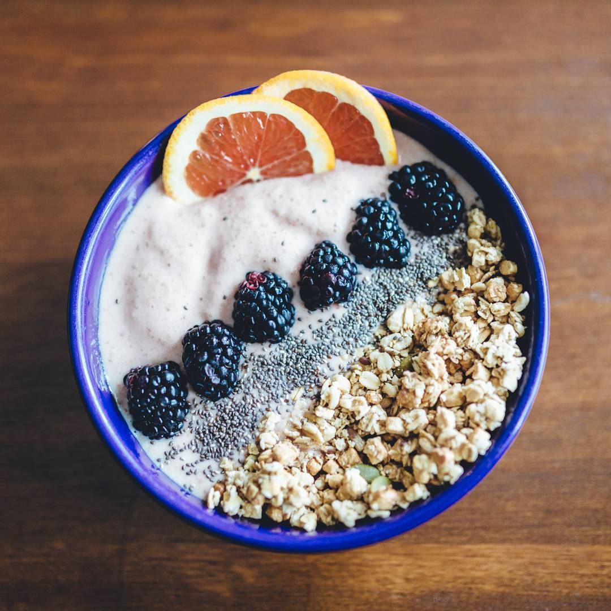

Smoothie Bowl

Description
On a hot summers day, a smoothie always cools me down. Sometimes we like to change it up for the kids, so we make them smoothie bowls, and they love it! A cold and creamy smoothie base, topped of with crunchy granola, chia seeds and fruit. The perfect snack on a hot day or a great way to kick off your morning.
Ingredients:
- Frozen strawberries
- Vanilla Yogurt
- Fruit (whatever fruit you prefer)
- Chia Seeds
- Granola
Steps:
- Blend the frozen strawberries, vanilla yogurt, ice, and honey
- Pour it into a cereal bowl, and smooth out the top with a spoon.
- Pour some granola to one side. In this case, I used vanilla, pumpkin seed granola, and it adds the perfect crunch!
- Pour a little row of chia seeds.
- Start placing your fruit in the remaing space. In our case, we used really sweet blackberries and some blood orange wedges.